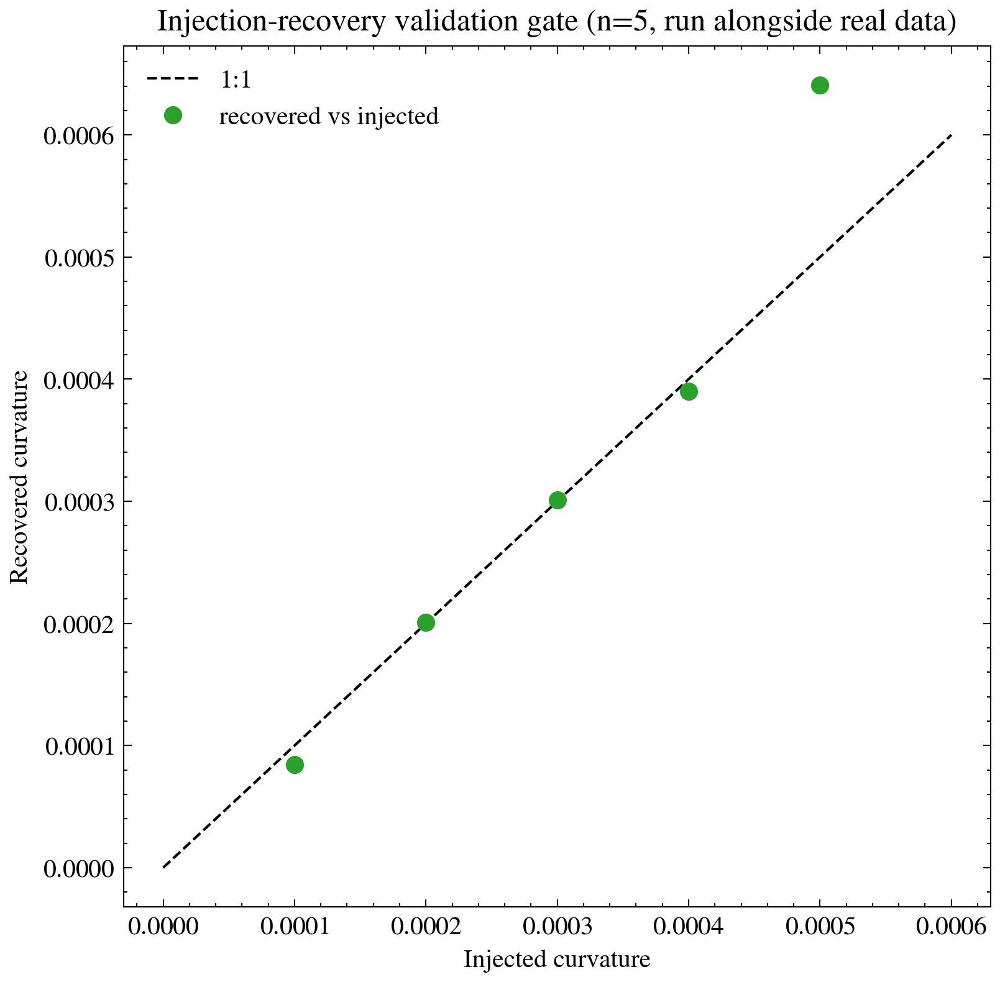

Provenance
SHA-256, LF-normalised text
e4f3f31d6d0be784d7e506cbe09c7cb71ac2f4cba66aefc41bdbdb6dde6dcf29Browse 14 versioned evidence files. Table previews simply display stored rows. Consult the project report for the source, processing steps, and inference assumptions.


e4f3f31d6d0be784d7e506cbe09c7cb71ac2f4cba66aefc41bdbdb6dde6dcf29| product_id | source | source_url | retrieved_utc | sha256 | file_size_bytes | selection_reason |
|---|---|---|---|---|---|---|
| ibft16req_ima | MAST/HST | https://mast.stsci.edu/api/v0.1/Download/file?uri=mast:HST/product/ibft16req_ima.fits | 2026-09-25T08:05:00Z | dbf554ab3b226d33d33980454f5b6f56547d77a87a656ddf5b314f7d98e8cb51 | 105171840 | deterministic first-3 public WFC3/IR F160W GALAXY exposure sample, sorted by obs_id; current CALWF3 3.7.3 product dated 2026-06-05 |
| icnn06srq_ima | MAST/HST | https://mast.stsci.edu/api/v0.1/Download/file?uri=mast:HST/product/icnn06srq_ima.fits | 2026-09-25T08:05:00Z | 0b5cb40e6f7d56b10cdcb583ec83ad92859ad8510e71b7899eb7551658717e31 | 2234880 | deterministic first-3 public WFC3/IR F160W GALAXY exposure sample, sorted by obs_id; current CALWF3 3.7.3 product dated 2026-06-02 |
| icp910qoq_ima | MAST/HST | https://mast.stsci.edu/api/v0.1/Download/file?uri=mast:HST/product/icp910qoq_ima.fits | 2026-09-25T08:05:00Z | e82be4d3d7315e07873d734890eca37ab675a614877b98cf3287d57617f8bf86 | 168261120 | deterministic first-3 public WFC3/IR F160W GALAXY exposure sample, sorted by obs_id; current CALWF3 3.7.3 product dated 2026-06-02 |
479a9f1fe0a27fbffd9baca6be5d121bcfb69a33c1259dd7fb3fe08e272ec0e5969be7313df25858d0b893d52089994d104dff1a888e37b62f1746ffe38f3ac3| x | value | uncertainty |
|---|---|---|
| 0 | 0.10 | 0.02 |
| 1 | 0.18 | 0.03 |
| 2 | 0.14 | 0.02 |
| 3 | 0.24 | 0.04 |
2231cd2f44a7854fefcb8da60f527333a903c9c7a75fbd9154fdde13de6993052723e584e8a3221eb534d56079230d6501780e064b0b10cad25b5aed0be2ad80| product_id | n | median_rate_change | median_endpoint_residual | median_max_fluence_e |
|---|---|---|---|---|
| ibft16req_ima | 40 | -0.02216577067610795 | -0.0225260464802183 | 75284.2203827675 |
| icp910qoq_ima | 30 | 0.0068757080859192 | 0.0166918705454805 | 15921.452748483029 |
74b16fb875890eb6eea82dd8733f31d1008e5529bf000c0669ba1d93f2a9c634f1727598c45eb1d9f5b6baefb28bf57f4f4d2f66bfae6047b46bc5ac94bb1d9ef2ca2d4f9f5bccee257a97e8a8a26b20f0c0b1a1a0ca4dac58d9dcf444310487080296066da1420b4532fcd4f97aa1311b691304720a952471d8aabeb47f48be5b0a1b45716f548841d476051dc8d4078daf02d5d216164c3ea47d07cce83d473e209c3b5023681d6d8bebbdaf2b7890e5815682656d2d9936a8a6ac1cd8a5d76e104c3cdba1becfbf60a54e0703f2bdf3517d73746068d6e54045eff76802539602aa3d4dca1859e641f230129473ae6b4c56063430446c90e90f036562061b28ca019a80596e581f97a864c43efa9ef6272dc02661f6ed1ec8be7bb9b59021SHA-256 values verify the stored files. They do not independently validate the scientific analysis. Rebuild this page with python scripts/evidence_catalog.py followed by python scripts/render_evidence_page.py.